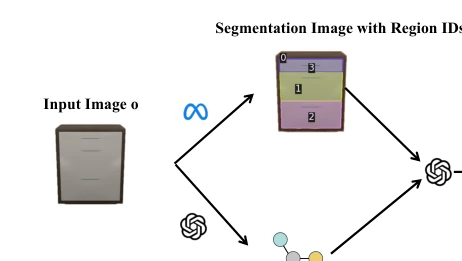
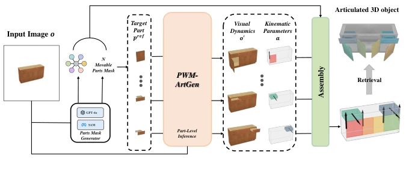
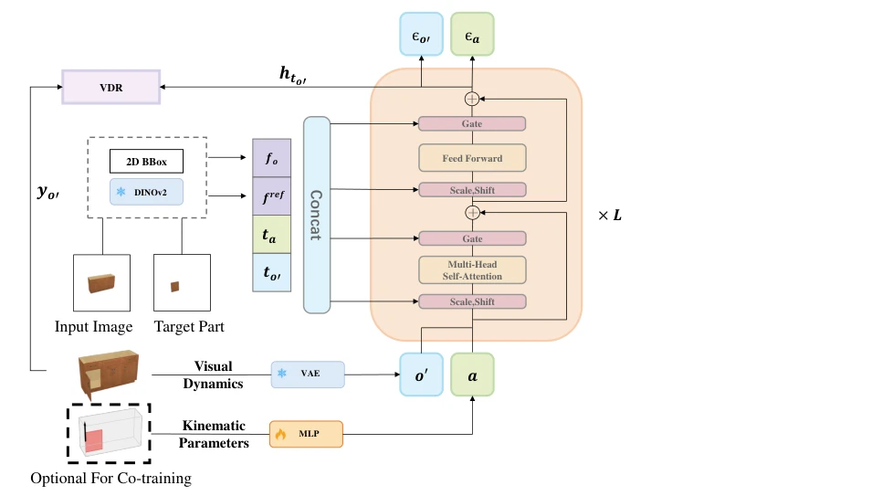
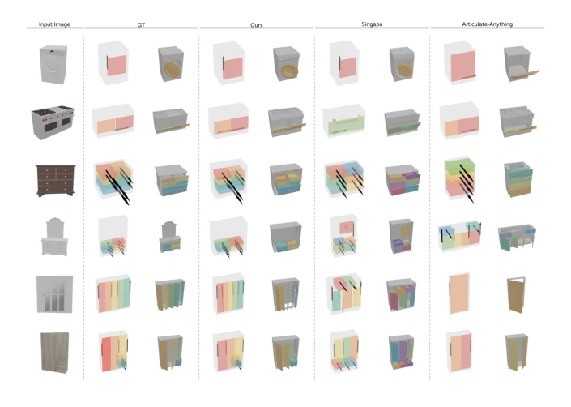
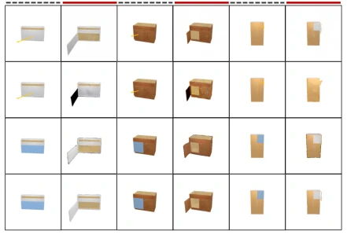
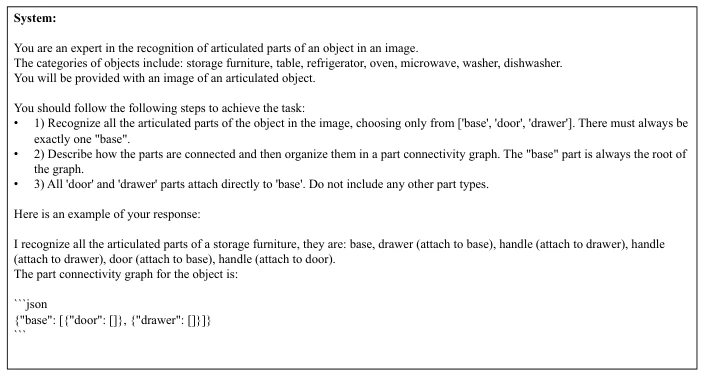
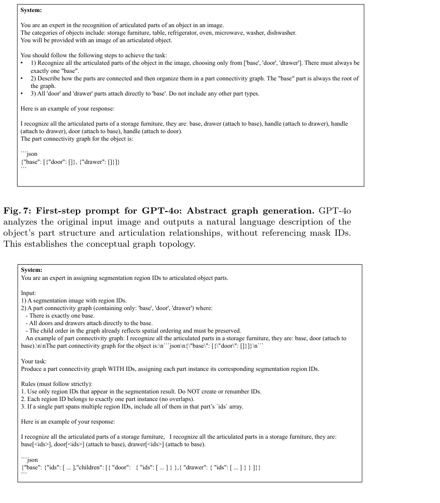
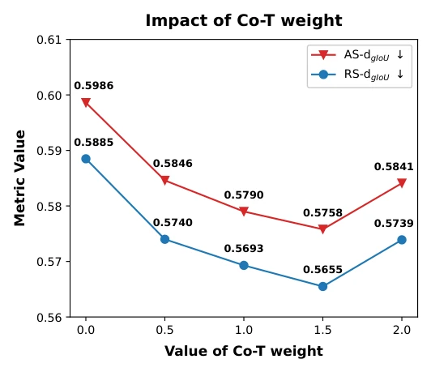
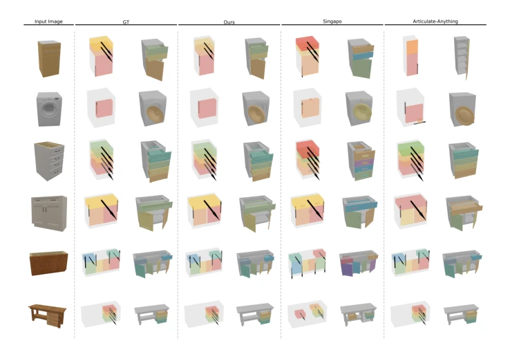
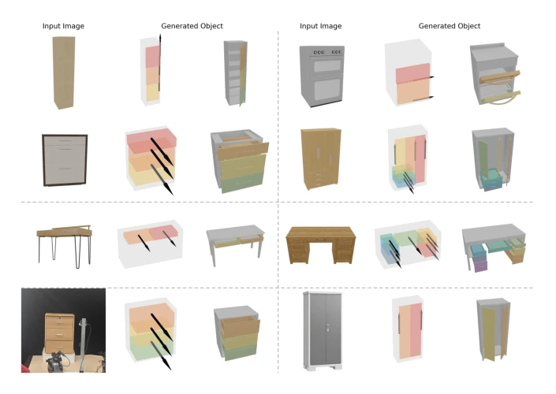

这篇论文给单图生成可动物体加了个“世界模型”的滤镜，试图通过联合建模视觉动态和运动学参数来解决结构预测难题。核心亮点在于利用独立扩散步长实现无标注数据的协同训练，PM-R 数据集的构建确实有效缓解了合成到真实的鸿沟。但别高兴太早，Part Mask Generator 依赖 SAM 和 GPT-4o，这黑盒步骤要是崩了，后面全白搭。而且零样本泛化虽然强，但失败案例里那些非标准结构还是暴露了物理先验的不足。总的来说，是个不错的工程化改进，但理论深度离真正的“物理世界模型”还有距离，更多是扩散模型在特定任务上的巧妙应用，而非真正的物理推理。
This paper adds a "world model" filter to single-image generation of animatable objects, attempting to solve the structure prediction challenge through joint modeling of visual dynamics and kinematic parameters. The core highlight lies in achieving collaborative training on unlabelled data using independent diffusion steps, and the construction of the PM-R dataset indeed effectively alleviates the sim-to-real gap. However, do not get too excited; the Part Mask Generator relies on SAM and GPT-4o, and if this black-box step fails, everything afterwards is wasted. Moreover, although zero-shot generalization is strong, the non-standard structures in failure cases still expose the insufficiency of physical priors. Overall, it is a decent engineering improvement, but the theoretical depth is still far from a true "physical world model", representing more of a clever application of diffusion models on specific tasks rather than true physical reasoning.
The biggest pitfall in single-image generation of animatable objects lies in "static information cannot derive dynamic structure". Existing methods either rely on multi-view optimization, which is computationally heavy and difficult to align [23, 26, 27, 32]; or directly regress parameters, lacking dynamic clues leading to poor performance on complex objects [22, 24]. More challenging is the data; PartNet-Mobility is too artificial [29], and ACD is too small [15]. Obtaining real motion annotations is too costly, causing models to struggle to generalize to real-world scenarios. The authors realize visual dynamics and kinematics are mutually constrained, attempting to use visual priors in unlabelled data to compensate for the deficiencies of static images, which is key to solving generalizability.

Fig. 6: Overview of the Part Mask Generator pipeline. Given an input image o, SAM generates a segmentation map with region IDs (top path), while GPT-4o in- dependently infers an abstract part connectivity graph (bottom path). A final merging step aligns the two outputs, assigning mask IDs to graph nodes to produce the final Part Connectivity Graph with Mask IDs.
The overall process is divided into three steps: first generate part masks and connectivity graphs using SAM and GPT-4o, then predict dynamics and parameters using PWM-ArtGen, and finally assemble. The model core is Diffusion Transformer, inputting static images and part references, outputting action noise and image noise. The innovation lies in independent diffusion steps, allowing the visual branch to utilize data without action annotations for collaborative training. Visual Dynamics Regularizer (VDR) forces generated visual features to align with clean images, preventing the model from overfitting static geometry. During training, Gaussian noise is used to fill missing actions, achieving mixed data training, effectively narrowing the sim-to-real gap. Specifically, the model projects kinematic attributes as tokens, concatenates them with visual tokens, and injects timestep information via AdaLN. VDR uses DINOv2 features to constrain intermediate layer hidden states, ensuring generated dynamics conform to physical semantics. This design enables the model to not require pre-defined part counts and handle unseen object structures, achieving efficient generation from single images to animatable 3D assets.

Fig. 1: Overview of PWM-ArtGen, an end-to-end pipeline to convert a single image into an articulated 3D object: (1) Parts mask generator: from image o, a pretrained module based on SAM [17] and GPT-4o [14], extracts N part masks {mi}N i=1 and an articulate graph for assembly, (2) Part-level inference: pref i is instantiated as the part mask mi, sample (o′ i, ai) ∼p(o′, a | o, pref i ), (3) Assembly: align and assemble {(o′ i, ai)}N i=1 with the shared base bounding box bbase in the object, (4) Retrieval: fol- lowing prior work [22,24] to regularize geometry and motion. Implementation details of the Part Mask Generator, Assembly, and Retrieval are provided in the Supplementary Material.

Fig. 2: A single Part World Model (PWM-ArtGen) block consists of a transformer block with observation, a target articulated part, and diffusion timesteps conditioning via adaptive layer norm.
Tested on ACD and PartNet-Mobility. Baselines include SINGAPO [22], URDFormer [7], etc. Metrics include dgIoU, Acc, and collision rate. Results are significantly better than baselines on ACD zero-shot, proving real data generalization capability. Collaborative training on the PM-R dataset makes the model more stable on synthetic data as well. Ablation studies show that removing VDR or collaborative training causes significant performance drops, especially under complex structures. However, the segmentation quality of the Part Mask Generator still has flaws on synthetic data, affecting some metrics. In detail, dgIoU improvement on ACD is obvious, indicating more accurate part localization. Although the visual dynamics branch has few parameters, inference speed is fast, suitable for real-time applications.

Fig. 4: Qualitative comparison on the ACD dataset under zero-shot evaluation. From left to right: input image, ground truth (GT), our method, SINGAPO, and Articulate- Anything. Each row shows the predicted part layout and motion axes in both resting and articulated states. The last four rows highlight that other methods’ predictions exhibit spatial misalignment with GT in part positioning and joint orientation. In con- trast, our method produces parts that are spatially better aligned with GT, with more accurate joint orientations, cleaner boundaries, and more realistic articulation dynamics—especially on objects with complex textures and occlusions.

Fig. 5: Qualitative comparison of interactive dynamics generation. Compared to DragAPart and Puppet-Master, which utilize drag-based prompts (yellow arrows), our model adopts mask-based conditioning (blue regions). Black dashed lines and red solid lines denote the input and generated frames, respectively. Despite the significantly reduced parameter count, our method produces results consistent with the Ground Truth (GT) and competitive with state-of-the-art baselines.
其他图片Other Figures

Fig. 7: First-step prompt for GPT-4o: Abstract graph generation. GPT-4o analyzes the original input image and outputs a natural language description of the object’s part structure and articulation relationships, without referencing mask IDs. This establishes the conceptual graph topology.

Fig. 8: Second-step prompt for GPT-4o: Mask ID assignment. The same image is overlaid with SAM-generated part masks, each labeled with a unique ID. GPT-4o maps the previously described parts to these IDs, producing a structured mapping that enables construction of the final Part Connectivity Graph with Assigned Mask IDs.

Fig. 9: Sensitivity analysis of the Co-T weight on the ACD dataset.

Fig. 10: Qualitative comparison on the PartNet-Mobility dataset. From left to right: input image, ground truth (GT), our method, SINGAPO, and Articulate-Anything. Each row shows the predicted part layout and motion axes in both resting and articu- lated states. The last row highlights that SINGAPO’s predictions exhibit spatial mis- alignment with GT in part positioning and joint orientation. In contrast, our method produces parts that are spatially better aligned with GT, with more accurate joint orientations, cleaner boundaries, and more realistic articulation dynamics—especially on objects with complex textures and occlusions.

Fig. 11: Additional qualitative results on the ACD test dataset and in-the-wild or internet-sourced images. First two rows: Successful reconstructions from ACD test inputs, demonstrating robust part-level articulation recovery under complex textures, occlusions, and lighting variations. Third row: Failure cases, typically occurring when input objects exhibit base geometries or articulation patterns outside the training dis- tribution (e.g. non-standard supports, irregular hinge placements), resulting in physi- cally implausible or collision-prone configurations due to mismatched 3D priors. Last row: Zero-shot generalization on in-the-wild or internet-sourced images, showcasing the model’s ability to infer articulated structures from real-world photos beyond cu- rated datasets.